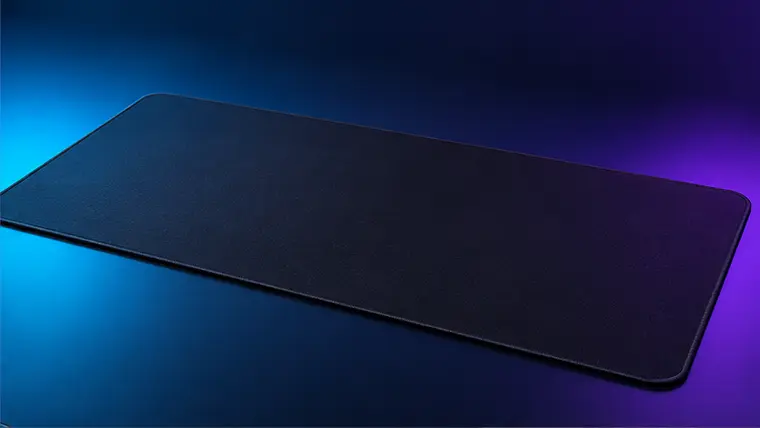

Research-based product guide
Large Extended Desk Mat
A broad desk mat that creates more mouse room and protects the desk surface.
Anyone improving desk organisation, lighting or ergonomics.
The exact version, live price, seller and availability are shown on Amazon.
Our verdict
Is the Large Extended Desk Mat worth considering?
A broad desk mat that creates more mouse room and protects the desk surface. It earns a place on our shortlist because it addresses a clear setup need, but the checks below matter before ordering.
Reasons to consider it
- ✓ More usable mouse space
- ✓ Protects the desktop
- ✓ Helps unify the setup visually
Things to check
- ! Measure the desk before ordering
- ! Surface speed and texture are personal preferences
The details that matter
Large Extended Desk Mat: quick buying guide
Pros and trade-offs
Use the reasons to consider and things to check below as a fast suitability test. A strong product can still be the wrong choice if its shape, layout, connection or platform support does not match your setup.
Compatibility checklist
- Confirm the exact model and variant in the listing title.
- Check the supported PC, console, display or desk requirements.
- Review what cables, adapters or accessories are included.
- Check the seller, returns terms and current availability on Amazon.
Why it made our shortlist
This product addresses a clear setup need and has features that can make sense for the right buyer. Our assessment is editorial and research-based; it is not presented as a hands-on test.
Review summary
What this review means
This is an editorial, research-based assessment using product specifications, compatibility information and recurring buyer considerations. SetupFinds does not claim hands-on testing or reproduce individual Amazon customer reviews.
Before buying
- Confirm the exact model and version in the Amazon title.
- Check compatibility with your PC, console, monitor or desk.
- Review the current seller, returns information and included accessories.
- Compare the live price with alternatives in the same category.